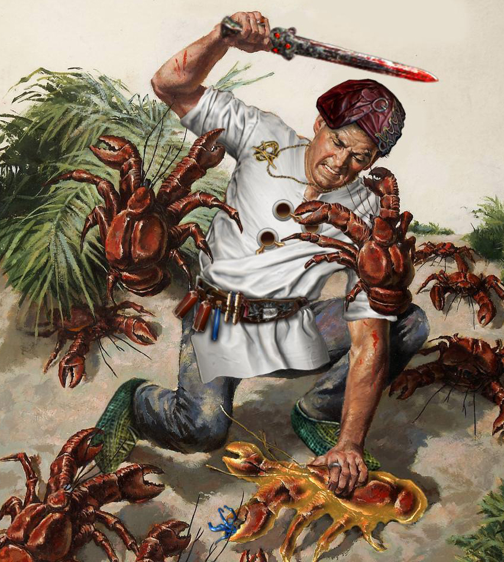

Herramientas y enlaces externos de utilidad
Esta es una poderosa herramienta con la cual podemos planificar desde 0 nuestro personaje, comparar habilidades, caminos en nuestro árbol de pasivas y crear objetos totalmente customizables. También te permite importar un personaje ya hecho de forma muy sencilla copiando un link de pastebin o usando el nombre de cuenta de Path of exile de un usuario siempre y cuando su perfil sea público.
Poe ninjaPoe ninja es una gran base de datos destinada a compilar toda la información del mercado dentro del juego casi a tiempo real y navegar entre los personajes más poderosos de la liga.
